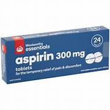
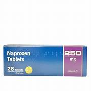
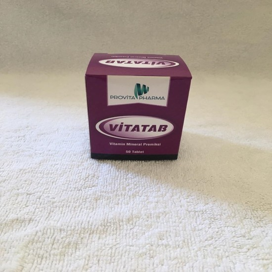

Aspirin is a salicylate.Used to treat pain, and reduce fever or inflammation.Used
to treat or prevent heart attacks, strokes, and chest pain.
Overdose symptoms may include stomach pain, vomiting, diarrhea, vision or hearing problems, fast or
slow
breathing, or confusion.

Paracetamol is an analgesic and antipyretic drug that is used to
temporarily relieve mild-to-moderate pain and fever. It is commonly included as an ingredient in
cold and flu medications and is also used on its own.
There may be no symptoms of overdose during the first 24 hours although paleness, nausea, sweating,
vomiting, loss of appetite and abdominal pain may occur.
Advil is a nonsteroidal anti-inflammatory drug.
Used to reduce fever and treat pain or inflammation caused by many conditions such as headache,
toothache, back pain, arthritis, menstrual cramps, or minor injury.
Overdose symptoms may include nausea, vomiting, stomach pain, drowsiness, black or bloody stools,
coughing up blood, shallow breathing, fainting, or coma.
Cipro is a fluoroquinolone antibiotic that fights bacteria in the body. Used to treat people who have
been exposed to anthrax or certain types of plague.Ciprofloxacin can cause serious side effects,
including tendon problems, damage to your nerves, serious mood or behavior changes , or low blood sugar.
Ibuprofen is used to reduce fever and treat pain or inflammation caused by many conditions such as
headache, toothache, back pain, arthritis, menstrual cramps, or minor injury.Overdose symptoms may
include nausea, vomiting, stomach pain, drowsiness, black or bloody stools, coughing up blood, shallow
breathing, fainting, or coma.side effects signs of a heart attack or stroke: chest pain spreading to
your jaw or shoulder.
Naproxen is used to treat pain or inflammation caused by conditions such as arthritis, ankylosing
spondylitis, tendinitis, bursitis, gout, or menstrual cramps.
Common naproxen side effects may include indigestion, heartburn, stomach pain, nausea, headache,
dizziness, drowsiness, bruising, itching, rash, swelling or ringing in your ears.

The vitatab is used to prevent or treat vitamin deficiency due to
poor eating habits, problems that affect the body's ability to absorb nutrition from food, or increased
need for vitamins and minerals due to stress or illness. side effects are Nausea, stomach upset,
diarrhea, flushing and unpleasant taste may occur.

Acetaminophen is a pain reliever and a fever reducer.Used to treat mild to moderate pain, moderate to
severe pain in conjunction with
opiates, or to reduce fever. overdose include loss of appetite, nausea, vomiting, stomach pain,
sweating, and confusion or weakness.